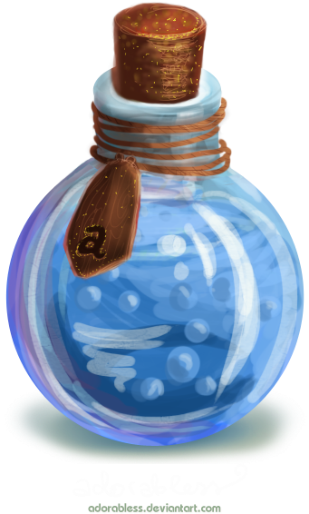
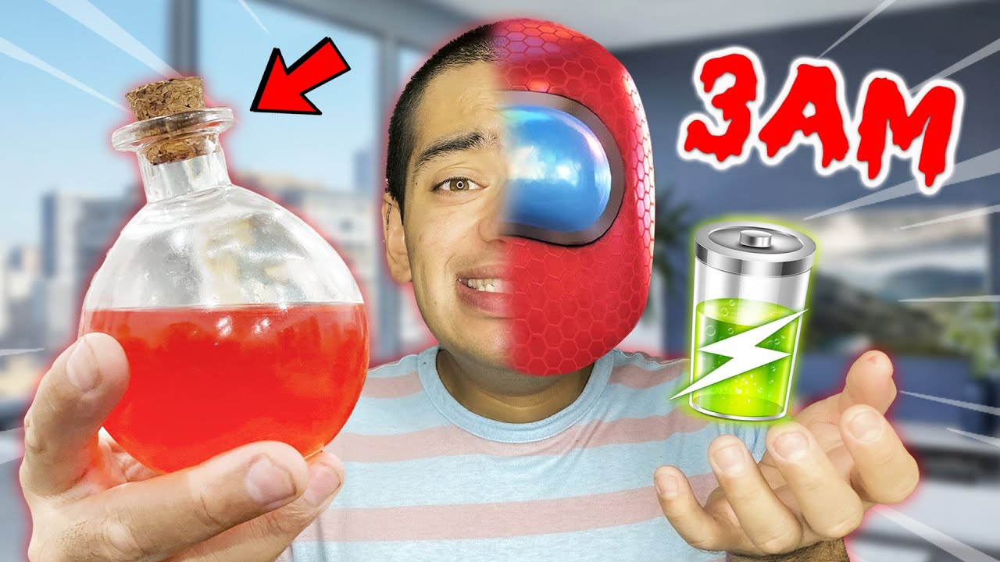
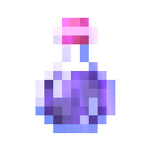
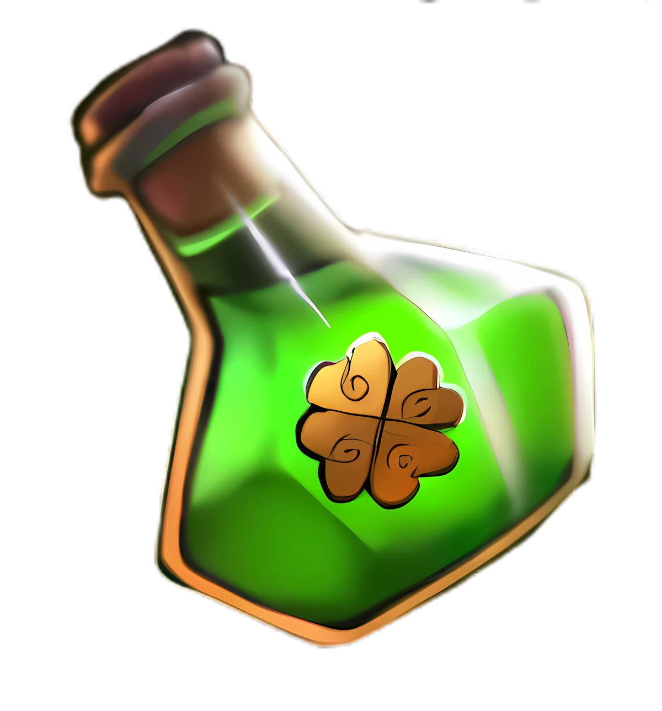
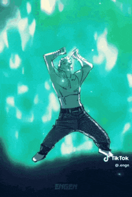

Health potion
The potionof healing restores health and heals injuries sustained during any time.
Mana potion

The potion of mana restores mana which had been lost after spell casting and is a quick way to get back into combat.
Among us potion

"The among us potion turns you into the impostor from among us."
Invisibility potion

Self explanatory, turns you invisible for a period of time.
Luck potion


Health potion
Ingredients: A cherry blossom tree leaf, 2 roses, 65ml essense of love.
Mana potion
Ingredients: 3 Mana lily flowers, 50 ml of concentrated focus, 25 ml of liquified lightning from a bottle.
Among us potion
Ingredients: FIRST YOU GOTTA GO TO THE DARK WEB AND BUY THE POTION OF AMONG US!!!
Invisibility potion
Ingredients: 200 ml of water, 125 grams worth of glass shards, 10 grams of arcane dust.
Luck potion
Ingredients: 3 Four leaf clovers, 20 gold coins, 5 dice. After that you need to melt it and sprinkle 10 grams of arcane dust.